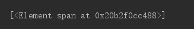
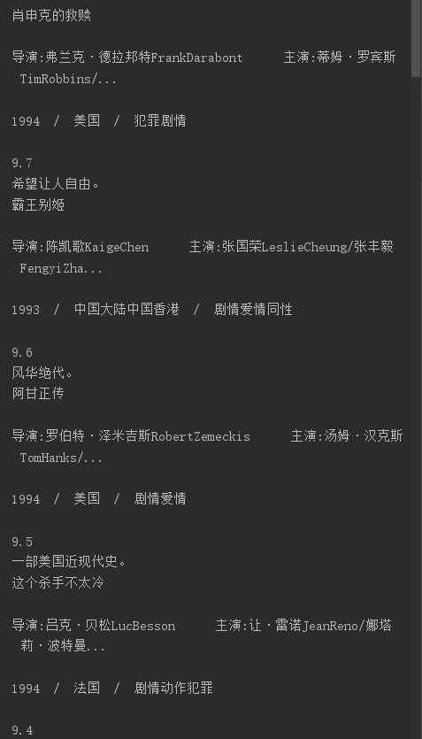
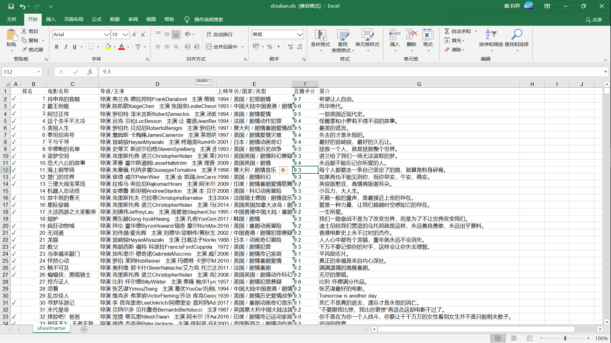

来自之前cnblog的博客
源地址：https://www.cnblogs.com/This-is-Y/p/13196523.html
豆瓣电影排行榜前250 分为10页，第一页的url为https://movie.douban.com/top250,但实际上应该是https://movie.douban.com/top250?start=0 后面的参数0表示从第几个开始，如0表示从第一（肖申克的救赎）到第二十五（触不可及），https://movie.douban.com/top250?start=25表示从第二十六（蝙蝠侠：黑暗骑士）到第五十名（死亡诗社）。等等，
所以可以用一个步长为25的range的for循环参数
分析完页面组成后，开始获取页面，直接request.get()发现没有返回任何东西，输出一下响应码
发现返回响应码418
以前没见过这个，拉网线上网查一下，发现给get里面加一个header参数就行了
这里可以用自己浏览器的user-agent，如
headers = {‘User-Agent’: ‘Mozilla/5.0 (Windows NT 10.0; Win64; x64) AppleWebKit/537.36 (KHTML, like Gecko) Chrome/73.0.3683.103 Safari/537.36’}
或者用fake_agent(安装直接用pip install fake_agent) 来为自己生成一个随机的agent添加到header字典中
之后就可以得到页面源码了。
然后使用lxml.etree，即xpath解析页面源码。用浏览器插件xpath finder快速定位到元素
但是直接这样子，解析到的是这样的结果
[<Element span at 0x20b2f0cc488>]

关于这东西是什么，有文章写的很好：https://www.jb51.net/article/132145.htm
这里我直接写解决部分，在使用xpath解析时，后面加上/text()
解决后，再使用xpath finder插件，一步一步获取到电影所有数据
最后把这个写在函数里，外面再套上一开始说的循环，就OK了
在定位时，发现有4部电影介绍没有slogan，导致获取到的信息为空列表，也就导致了list.append()会出错。所以我加上了几个差错处理，解决方式可能有点傻，如果有更好的解决办法，洗耳恭听
代码在最后可以看到

EXCEL保存部分
这里我用的xlwt
创建一个sheet表单。
数据保存到一个大列表中，列表嵌套列表
再通过循环把数据导入到excel表单中
最后在保存一下
注意文件后缀要用xls，用xlsx会导致文件打不开
然后就大功告成了
打开文件，手动加入排名，等部分信息（这些也可以在程序里完成，我嫌麻烦，就没写，直接手动来的快）

前面的✓是我自己整的，用于记录那些看过，那些没看过
这也是我写这个东西的最初的目的
完整代码在下面，仅用于参考